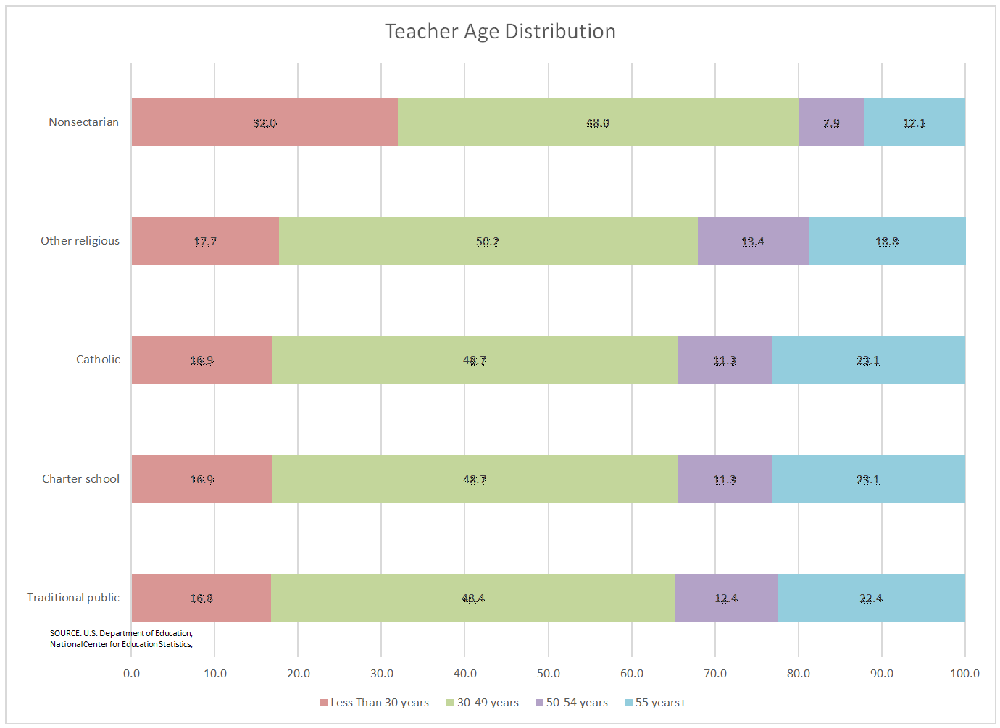

The Unknown Future of Young Teachers
The field of education is struggling to find college students to become the next generation of teachers.
The salaries of U.S. teachers has declined in 29 states since 1969 when adjusted for inflation. Low income is a main factor in why young people are not entering the field. Data Source: National Education Association.
Adam Schasel stays up late, just like any other twenty-something econ major fresh out of college. But, Adam is writing lesson plans for his high school economics class in Nampa, Idaho where he arrived through Teach for America with no curriculum and 30 old textbooks. But young people like Adam are becoming harder to find.
Fewer college students are pursuing teaching careers, according to studies conducted by ACT and the Dept. of Education. Teaching shortages have plagued the nation as the demand for educators skyrocketed after the Great Recession. The U.S. school system is expected to grow by 3 million students in the next decade, but teaching program enrollments have dropped by 35 percent between 2009 and 2014, according to the Learning Policy Institute.
The lack of interest in education is a cause for great concern in the field and at American University, students might not be aware of its benefits. A younger workforce would be more equipped with knowledge about modern technology and new teaching practices, but there is concern about teaching as a career among college students because of low salary, high workload, and a lack of respect. Teaching salaries have decreased in 29 states since 1969 when adjusted for inflation. Nationally, salaries have decreased 1.6 percent since that time.
“Learning about the lack of available teaching jobs in my field, the hostile environment, and the low pay really turned me off from becoming a teacher,” Salant said. “I haven’t ruled it out as a possibility in the future, but it will not be my primary career as I had once hoped.” C.H. Salant started American University in pursuit of a career in music education through composing and pedagogue. They now will start graduate school at AU for Arts Management.
Young educators are extremely beneficial to K-12 schools, according to American University professor, Traci Dennis.
“Younger teachers are great because they are willing to be innovative and creative and come with a stronger technology background,” Dennis said. “They tend to be more innovative because the way they’ve been taught in college. There are different engagement in classrooms that university professors might be using… that gives a lot of value to a younger teaching force.”
Starting salary for teachers is less of a cause for concern in DC. By completing a full-time student-teaching position in the spring of their senior year, Elementary and Secondary Education students at American University graduate with a DC teaching license with reciprocity in 40 other states. The District has the highest starting teaching salary in the country, at $53,601 with just a Bachelor’s degree, compared to $38,371 nationally.
In Dennis’ class, Schools and Society, students discuss a myriad of issues facing K-12 schools, including Common Core state standards, integration and segregation, school finance, and culturally relevant pedagogy to give future teachers a solid foundation of education’s role in society.
“We talk about the whole idea of innovation and how schools haven’t changed much over the years,” Dennis said. “Are schools really prepared for the needs of 21st century learners?”
The answer is, most K-12 schools are not. This is due to lack of funds and resources. But young teachers could help bridge the gap. College students like Schasel, who have the calling to make a difference, might become interested in education too late in their degree to switch.
Students recruited for programs for TFA typically study business or art and have to undergo a six week crash course without a solid foundation in education pedagogy. Teachers with little preparation leave the position at rates two to three times higher than their peers with a more comprehensive education, according to the Learning Policy Institute.
The Dept. of Education launched the “Teach” campaign in 2013 to fill one million potentially vacant positions formerly held by baby boomers. They wanted to replace them with the nation’s top performing college students. Former secretary of education, Arne Duncan, said to the NYTimes that he wanted “very, very high caliber college graduates to come and work in our nation’s schools.” The Teach websites acts as a search engine and customized portal for future teachers.
When compared to other popular entry level jobs for AU graduates, a starting teaching salary in D.C. fares pretty well. But since growth for salaries are so stagnant across the nation, it limits oppportunities for undergrads.
“In general, I have been hesitant about pursuing education because I do not believe it would be able to sufficiently help in paying off my student loans,” American University Class of 2017 alumni, Naomi Ziegler, said, “I believe in the value and importance of our educators but I also strongly believe that we, as a nation, do not recognize them or their contributions to the degree they deserve.”
At a university that is orientated around public service, Dennis said she thinks attracting more students to the Education program earlier in their studies will boost enrollment. She is creating a cadre of her students to will help lead campus presentations about the benefits of graduating with an Education degree.
Students like sophomore Michaela Desimone feel that teaching is about connecting to young people as their mentor. Desimone decided to study Secondary Education and History at American after taking Schools in Society and falling in love with the field. She hopes to pursue a Master’s in Special Education after graduating too. After visiting many local schools in D.C. and speaking to their special education teachers, she felt connected back to her own experiences in those classrooms from elementary through high school.
Desimone doesn’t deny that teaching in America today comes with some concerns, especially around issues of gun control following shootings in Parkland, Fla. and Newtown, Conn.
“You would think that a teacher’s job is the most safe, but in this day and age it isn’t for some reason,” Desimone said. “It’s a conversation that needs to be had. Difficult conversations are a part of being an educator. A teacher is a second parent, a moral guidance, a role model.”
Only five percent of the 1.85 million high schools students who took the ACT in 2014 indicated they wanted a career as an educator, down from seven percent in 2010.
“There needs to be a broader cultural emphasis on the importance of education,” Schasel said. “The best thing about TFA is that every day I feel like I’m in some weird Parks-and-Rec-style organization of young, motivated people who want to make a difference in their communities. If we could get young people to look outside the confines of big cities, I think they’d find a lot of opportunities to make a lasting impact in public education.”

Public schools have the lowest percentage of teachers under the age of 30. This means that students likely have less access to new innovative teaching ideas. Data Source: US Dept. of Education
Public schools today have the lowest percentage of teachers younger than 30 years old. About half of those who complete teacher preparation programs are hired to teach in a classroom, showing the lack of co-ordination between schools of education and identifying what the actual market demands. In Prince George’s County alone, there are currently 1,400 teaching vacancies, according to Dennis. Colleges and training programs will need to strategize with K-12 schools to fill specific vacant spots and fill those spots first.
The U.S. Dept. of Education tracks teacher shortages in each state as a tool to deploy financial resources to the areas with the most dire need for educators. This also results in recommendations for where Teach for America sends their corps members, often in high poverty, high minority schools. But the need for teachers is everywhere. All but two U.S. states reported teacher shortages in 2015, especially in the fields of special education, science and mathematics. Some states have even begun recruitment for teachers internationally, like in Arizona where schools have sponsored work visas for teachers from the Philippines.
“Nothing actually deterred me from teaching, I simply found a ‘true-er’ calling,” Steph Black, a junior formerly in the School of Education, said. She witnessed the Supreme Court hearing for Whole Women’s Health v Texas by volunteering for NARAL Pro-Choice.
“I listened to something like five straight hours of pro-choice, progressive speakers and knew in my heart that that was what I was meant to do-advocate for women and feminism on a large scale,” she said. “Being one woman in a classroom with 30 kids wasn’t the right kind of impact I wanted to have.”
And no, teaching is not for every college student. But institutes of higher education need to improve recruiting and promotion techniques to boost interest in this field. While the teaching has surely changed in the last ten years, it doesn’t mean that more inspired teachers won’t be needed to make the change for education in the future.
“What really pushed me over the edge was the realization that I could always come back to work in DC no matter what happened – I would never have another opportunity to drop everything and take a giant leap of faith to try and enact positive social change,” Schasel said. “Since then I’ve met so many remarkable people who are really dedicating themselves to education.”